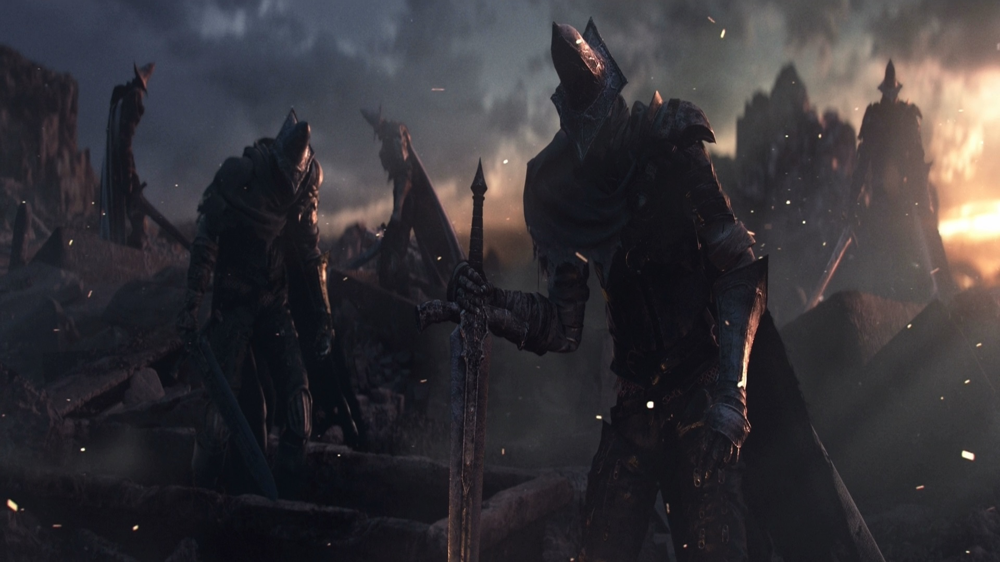
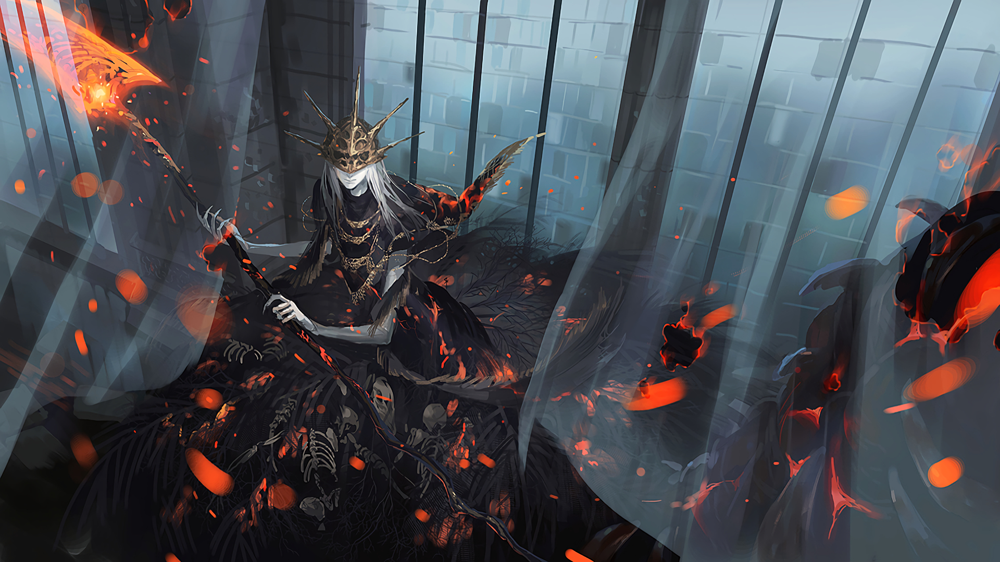
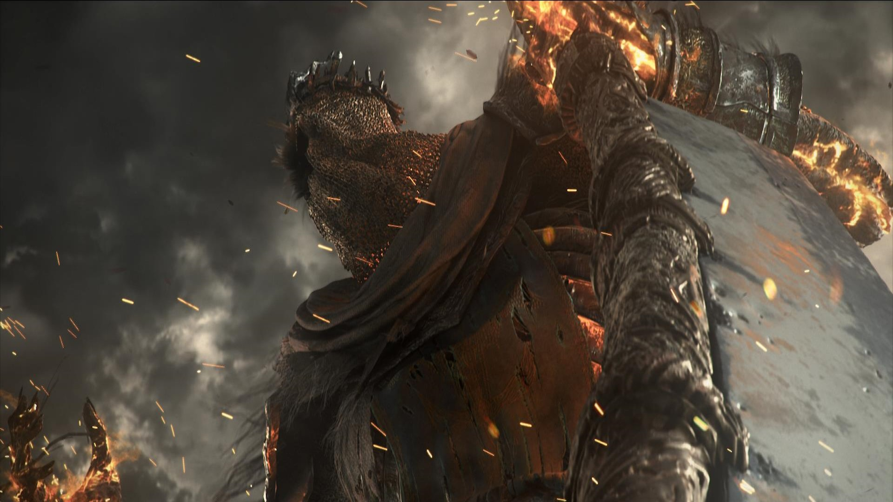
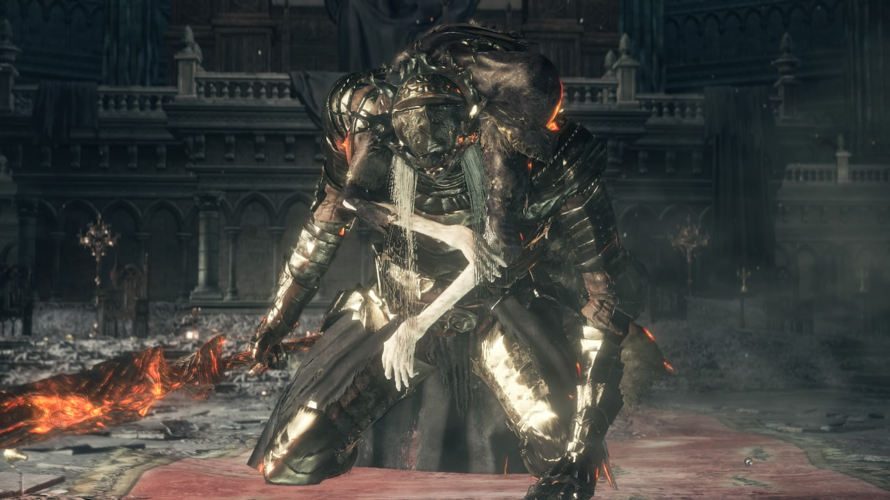

Unkindled are failed Lords of Cinder, succeeding in linking the flame, but too weak to survive the burst of fire.
Lords of Cinder cannot Link the Flame on their own, and all five are needed.
The Lords of cinder have linked the fire long ago, but it still fades and it was deemed "not enough". The new order was to have all 5 of them link it again, this time together for a stronger sacrifice.
Only Ludleth of Courland was willing to make the sacrifice. He had his legs removed should his will waver, as the first time he linked the fire must had been traumatic. No one else wants to link the flame. It might be that they barely survived the first time or it hurts like hell.
The champion of ash, along with many other unkindled are awoken from death, possibly by the fire's call, to bring all mighty Lords back, dead or alive.
Despite having served as the fuel for the First Flame for this long of a time the Lords of Cinder still retain a good amount of the fire within their body. This aspect in itself is somehow standing against the purpose of “sacrificing oneself to prolong the inevitable” as it implies that this power is taken from the already dying First Flame and thereby weakening it even further.
This in fact could be the very reason the Player Character has to find the Lords of Cinder, slay them and thereby retake their souls to then feed them to the First Flame again by Linking it.
The young prince Lothric is being called a Lord of Cinder, even though he is implied to have never actually linked the First Flame. He is also not shown to have any of the fire powers the other lords use in their second boss phase. All the fire attacks used are stemming from his older brothers sword (which got its effect from Demon fire).
Lords of Cinder

Abyss Watchers
The soul, passing from one body to the next, forever warring, is one of the 5 Lords of Cinder.
Not optional: must be defeated to access Catacombs of Carthus.
Location: Farron Keep at the very end through the big stone door with the three sconces for fire.
Weapon: Uses the Farron Greatsword.
Combat: This boss can be backstabbed and Parried/Riposted. Also staggers easily.

Aldrich, Devourer of Gods;
When Aldrich ruminated on the fading of the fire, it inspired visions of a coming age of the deep sea.
He knew the path would be arduous, but he had no fear. He would devour the gods himself.
Not optional: All Lords of Cinder must be defeated to progress through the game.
Location: Anor Londo, up the stairs and into the Cathedral where Ornstein and Smough are fought in the first Dark Souls.
Attacks deals Magic Damage, Fire Damage and Thrust Damage.
Weak spot: "human part" and head. Attacks above the waist deal full damage, while attacks to the tail lose a third of their damage.
Vulnerable to Vow of Silence miracle.

Yhorm the Giant;
"Reclusive lord of the Profaned Capital".
Not Optional: all Lords of Cinder must be defeated to advance the game.
Siegward of Catarina can help you fight this enemy. His questline must have been completed up to this point.
Yhorm can be found upon his throne behind a Fog Wall in Profaned Capital in a lower part of the temple, directly behind The Profaned Flame.
Weak to the Storm Ruler, which can be found inside the boss arena at the throne.

Lothric, Younger Prince;
He is a purely magical boss and is a force to be reckoned with while he's accompanied by his brother and partner boss Lorian, Elder Prince.
This boss is not an optional boss fight.
Location: The top of Lothric Castle.
Lorian can be poise-broken, what allows to perform a riposte.

 Lore Speculation
Lore Speculation